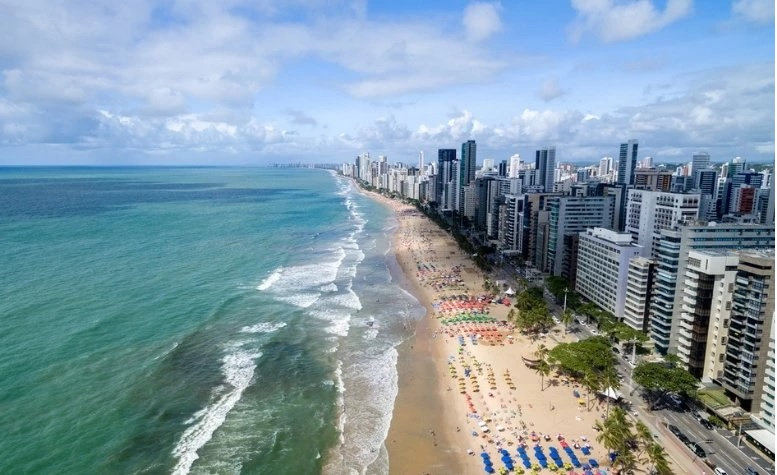

A Praia de Boa Viagem é a praia urbana mais famosa e importante da cidade de Recife. Ela fica no bairro da Boa Viagem e tem cerca de 7 quilômetros de extensão. Além disso, ela é delimitada de um lado pela Praia do Pina e do outro pela Praia de Piedade.
